Install and update
Install and update Rust Dedicated, Carbon or Oxide through SteamCMD, with branch selection.
Install, run and manage a Rust dedicated server on Windows. One exe, no installer, no .NET to hunt down.
Native, no .NET needed
Vanilla, Carbon, Oxide
Extract the zip and run
English and Turkish
Hosting Rust on Windows usually means a SteamCMD window, a batch file, an RCON tool, a text file full of convars and a backup folder you meant to keep up to date.
Rust Server Control puts that in one app. It installs the server, starts it, talks to it over RCON and keeps everything in the folder next to the exe.
It does not play Rust for you. That part is still your job.

From the first SteamCMD download to wipe number twelve.
Install and update Rust Dedicated, Carbon or Oxide through SteamCMD, with branch selection.
Server output as it happens, with filters, search and command autocomplete.
Who is online, what they said and who is banned, all over RCON.
Add and reload plugins, read compiler errors and browse uMod from inside the app.
Settings with search and presets, plus a check of the final launch line.
Name, description, logo and banner, with a live preview of the server browser listing.
Backups, scheduled wipes and automation tasks.
CPU, memory, FPS and player graphs, plus a kill/death leaderboard.
The whole app in English or Turkish. Pick one.
The pages you will have open most, drawn a little nicer than they need to be.





Pick a page, or click the picture to see it full size.
Server status, start and stop, and quick stats on one page.
Players, chat and bans over RCON.
Add and reload plugins, see compiler errors, browse uMod.
Settings with search, presets and a launch-line check.
Name, description, logo and banner with a live browser preview.
Backups, scheduled wipes and automation tasks.
CPU, memory, FPS and player graphs, kill/death leaderboard.
Tip: the arrow keys switch pages.
Tooltips and features in use, straight from the app. Click any picture to see it full size.
The longest step is SteamCMD. Make a tea.
Extract the zip into an empty folder, for example D:\RustServer, and run RustServerControl.exe.
The app stores servers, SteamCMD, backups and settings in that folder.
Move the folder and everything moves with it.
Click Create server. Choose a name, a folder, a framework (Vanilla, Carbon or Oxide) and the ports.
A secure RCON password is generated for you.
Click Install Rust server. SteamCMD downloads the server (about 6 GB) and the framework.
Press Start. The console shows the server output.
Players, chat and plugins work as soon as the server is online.
64-bit (x64)
Per server
In the folder of the exe. Move the whole folder to move everything. App, then Data & Security, can store new servers elsewhere.
Open the game port (UDP 28015 by default) and the query port in your router and Windows Firewall. App, then System, then Firewall rules creates the Windows rules for you. The router is on you.
No. RCON listens on 127.0.0.1 by default, so only this PC can connect. Change it in the server profile if you need remote tools.
Yes. On the first page, choose Use existing folder and select the folder that contains RustDedicated.exe.
Yes, for private and commercial hosting. You may not sell it or redistribute it. The licence has the details.
No. Windows 10 and 11, 64-bit.
Version 1.0.0. Free. Extract, run, press Start.